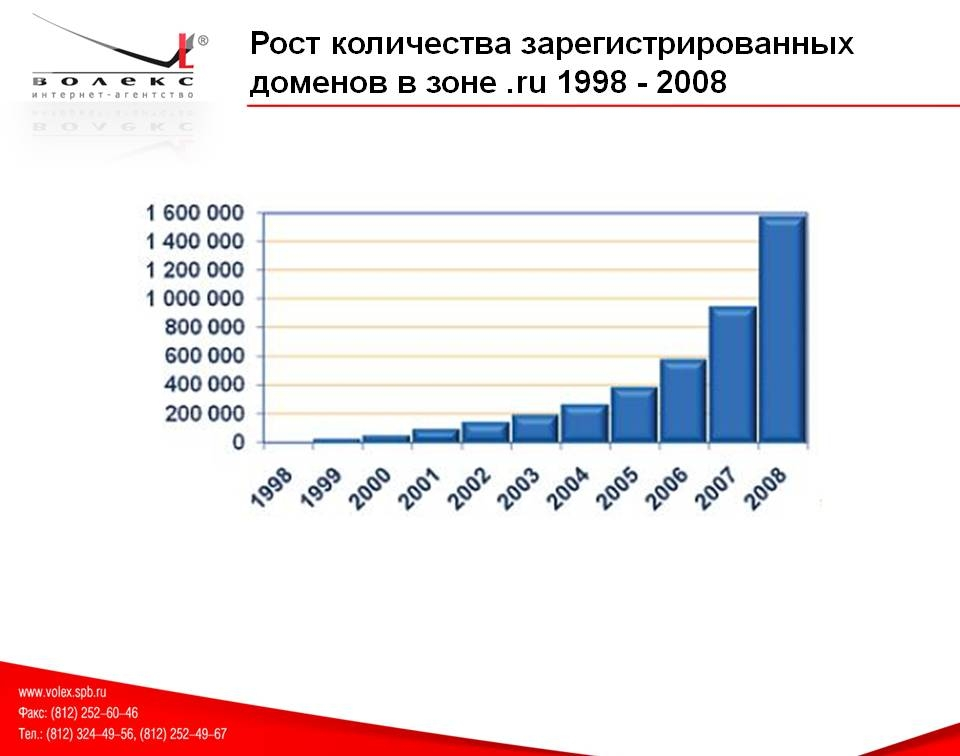
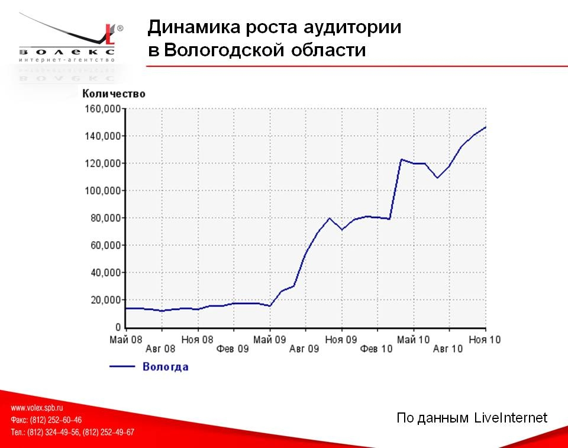
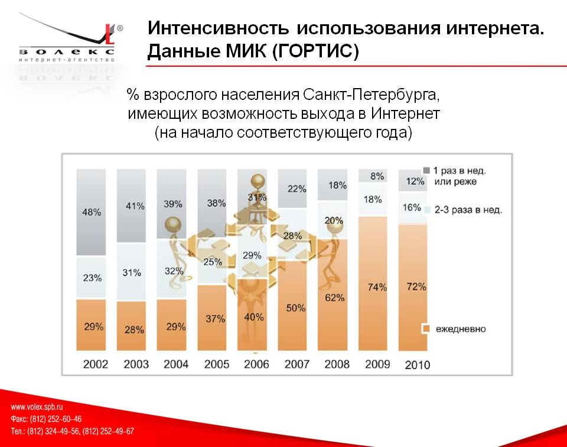
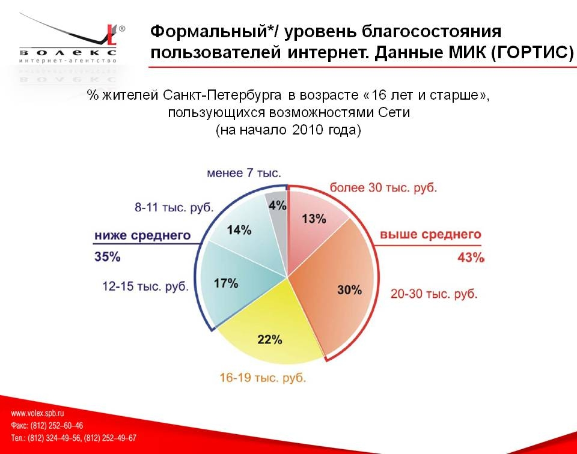
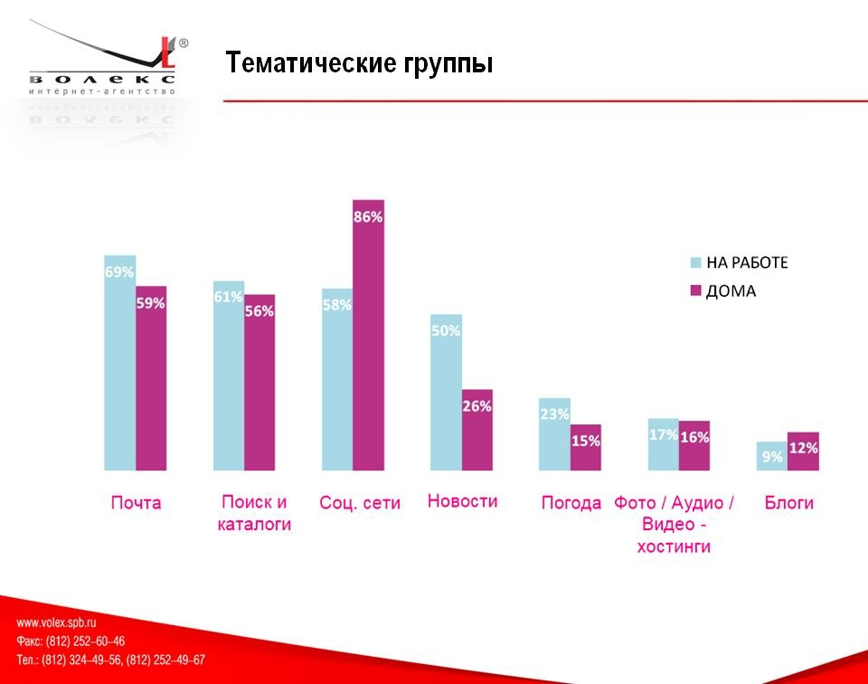
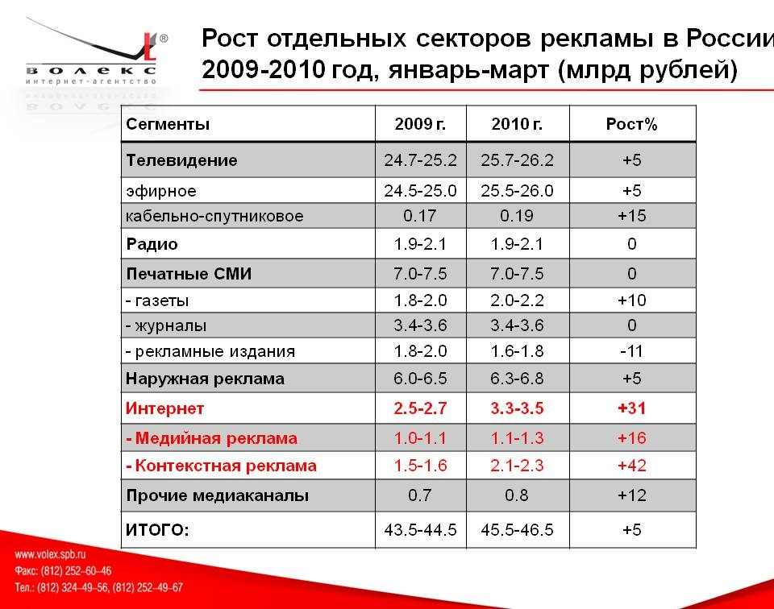
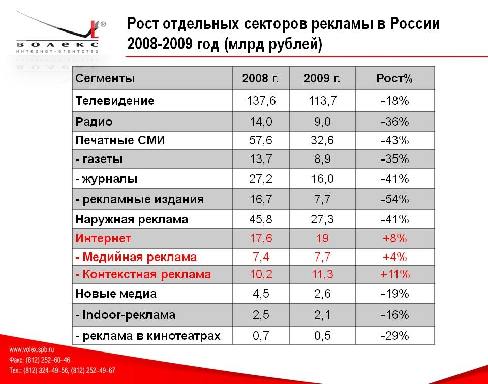

Семинар по интернет рекламе в Череповце
18 ноября 2010 года в здании Верещагинской библиотеки прошел 4-х часовой семинар посвященный интернет рекламе. На семинаре презентовалась технология современной медийно-контекстной рекламы в сети.
Проводили семинар представители Питерской рекламной фирмы Волекс за, что им огромное спасибо. Так же спасибо ребятам с сайта Наш Череповец за соучастие в организации мероприятия, информационную поддержку и вступительную речь.
Далее коротко по теме.
Цель семинара, я так понял, была в том, что бы «потыкать палочкой в череповецкий бизнес», на пример того, что бы узнать живой ли он вообще и собирается ли востребовать более дешевую и конверсиональную (как-то так) рекламу. Которая давно уже востребована в городах по продвинутей, не говоря уже о столицах где какие ни будь парикмахерские конкурируют в яндексе между собой. Перед приездом в Череповец сотрудники фирмы Волекс пытались найти хотя бы один Череповецкий баннер в популярных рекламных сетях типа Яндекса, Вконтакте и т.п. и не нашли.
Эту задачу решала презентация с огромным количеством статистики, дальше всего лишь несколько кадров с моими комментариями.
Интернет живее всех живых

Жители Вологодской области то же не прочь посидеть Вконтакте и Яндексе

Большинство людей юзает инет каждый день, у остальных видимо обрывы =)

Особенно те кто платёжеспособен

На работе люди чаще пользуются почтой чем сидят Вконтакте, дома наоборот

Все больше людей уходят рекламироваться непосредственно в интернет

А рекламные издания типа бесплатных спаммерских газет, вообще не переживут следующую волну кризиса.
Так что рекламируйтесь через интернет порталы с показом рекламы только на отдельный регион, и только тому кто ищет ваш товар. Стоит это примерно
от 30 копеек за один переход по вашей рекламе.
Ну, а за грамотным составлением и проведением такого рода кампаний обращайтесь в Волекс и ко мне. Волекс работает с заказами на рекламу от 3000 р., я тоже.
P.S. Да, да я надеюсь все унесли с семинара очень много полезного, — я унес от туда модный пакет и блокнот от Яндекса, спасибо ему за приветы =)
P.P.S. Если кому нужна вся презентация, пишите на мыло, скину.